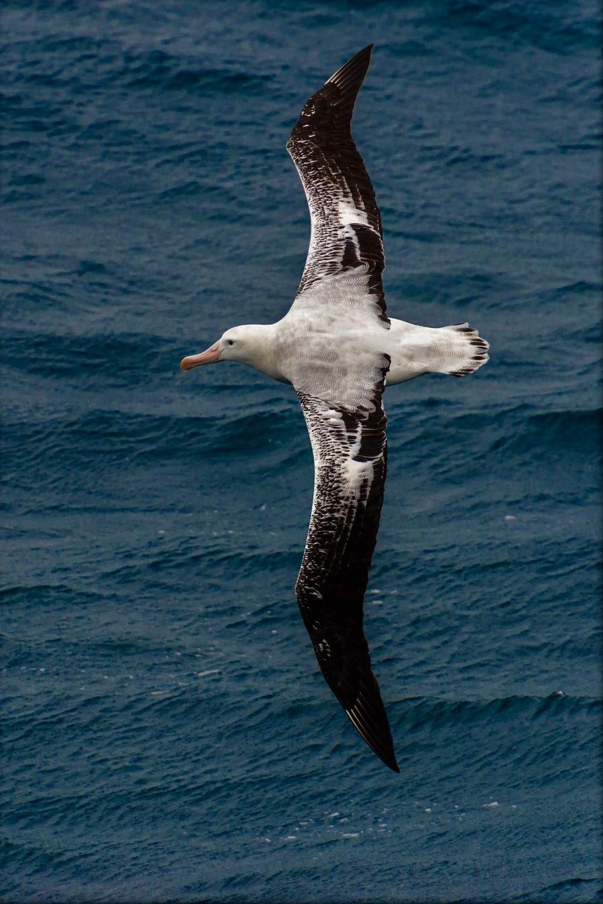
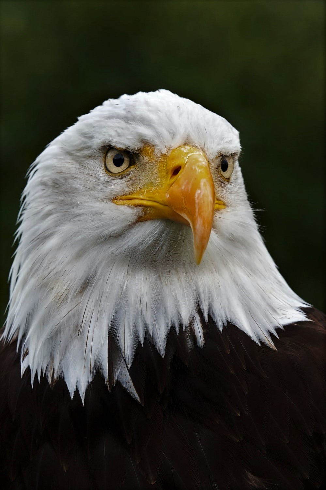
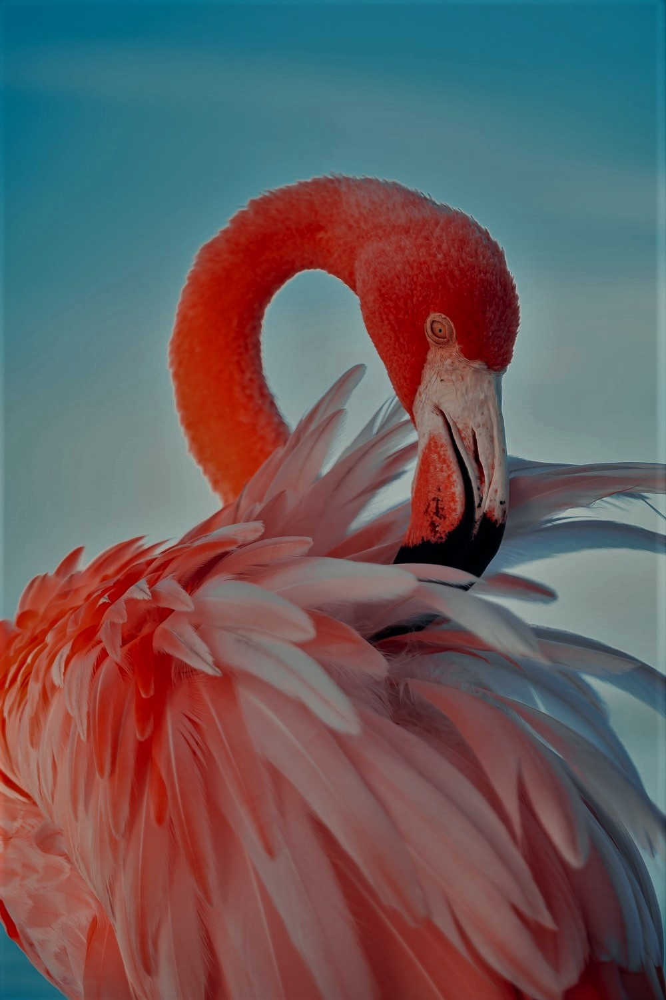
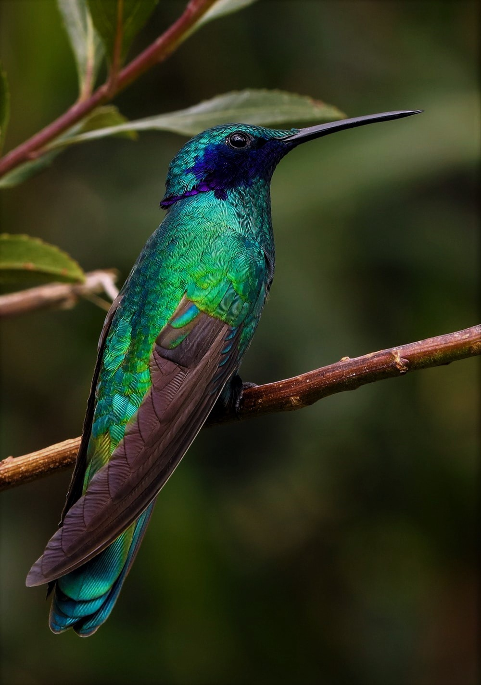
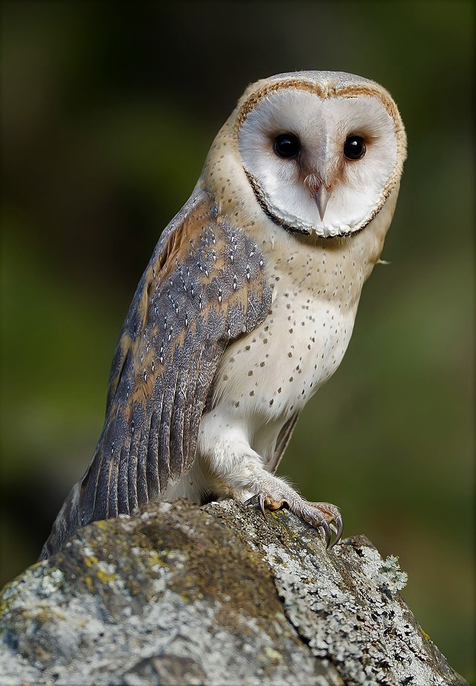
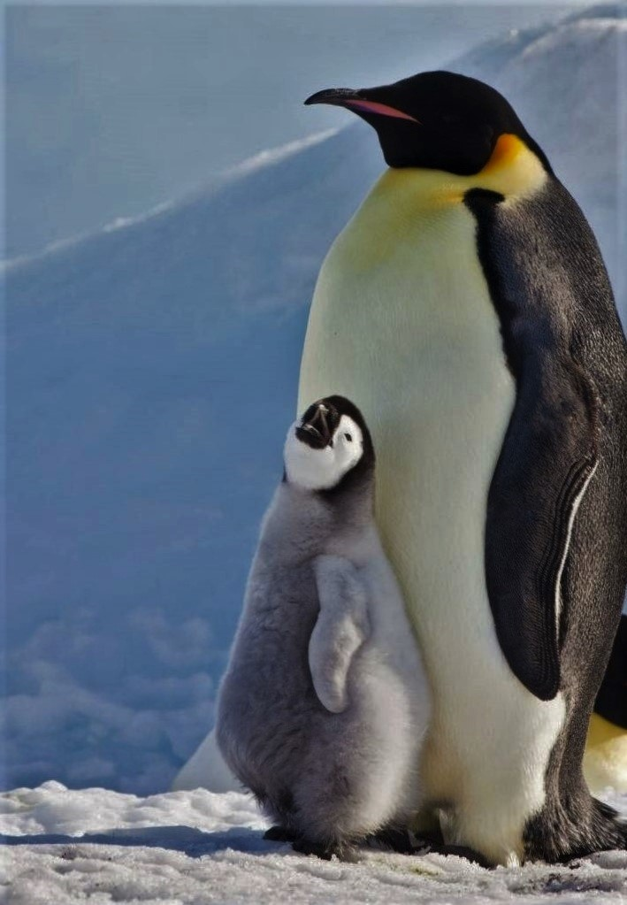
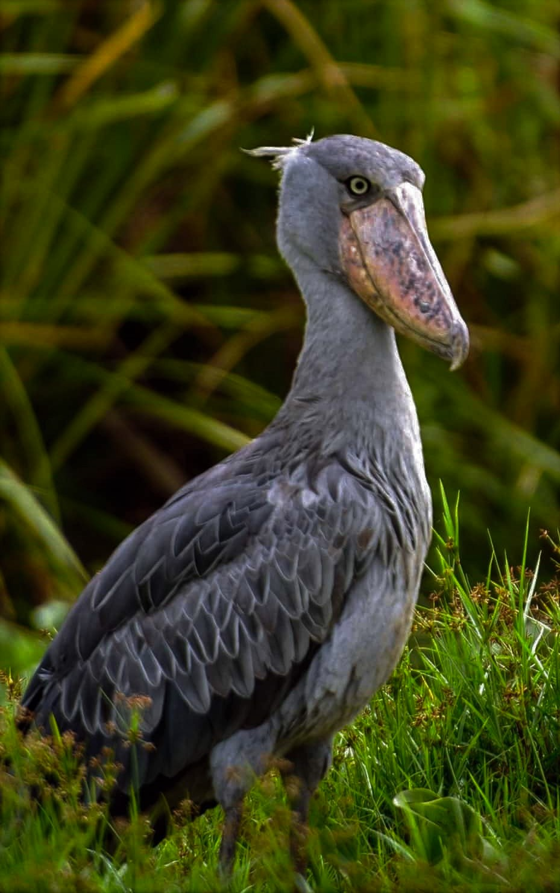
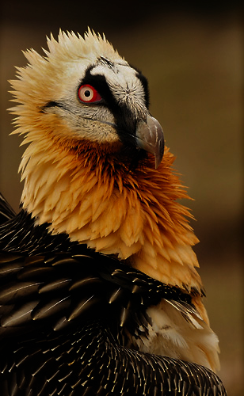

BIRDS
BIRDS ARE SOME OF THE MOST INCREDIBLE CRATURES ON EARTH. THERE ARE MORE THAN 11,000 SPECIES,
EACH WITH
THEIR OWN UNIQUE APPEARANCE AND HABITS.
BIRDS ARE SOME OF THE MOST INCREDIBLE CRATURES ON EARTH. THERE ARE MORE THAN 11,000 SPECIES,
EACH WITH
THEIR OWN UNIQUE APPEARANCE AND HABITS.
“Birds are among the most crucial species to the global
ecosystem. They must be protected at all
costs.”
For mellennia, birds have been winging their way across the globe and through our imaginations. They have value culturally, artistically, philosophically and economically. But beyond that, they play a huge role in preserving our
precious ecosystem and as such, all life on this planet. Birds control pests, clean up waste and spread seeds. Around 5% of the plants humans use for food or medicine are pollinated by birds.
Despite their importance, birds are declining at a shocking rate.
One in eight birds species
is now
threatened with extinction.
But by learning about birds, we can begin to tackle the
environmental
crisis.
Birds are found all over the world and are one of the most well-studied groups
of animals. As
such, they
act
as an early warning system for the state of the
planet as a whole. Changes in bird populations
show us
where
habitats are
being degraded, where climate change is taking its toll, and where action is
needed
most.
Birds have the power to unite people. Many species migrate vast distances,
motivating nations to
work
together to protect them every step of the way. In
this way, birds show us the levels of global
cooperation
needed to tackle the
climate and extinction crises in coming years. More simply than that, a
love of
birds
is something we can all share, regardless of our differences.
Birds species are currently
Criticaly Endangered
|
Albtrosses

Albatrosses are very large seabirds |
Eagles

Eagles are strong, powerful birds |
Flamingos

Flamingos are among the most |
|
Hummingbirds

The world’s smallest birds, famed for |
Owls

These elusive creatures of the night are |
Penguins

Penguins are particularly beloved, |
|
Shoebills

Shoebills are large, pre-historic looking |
Toucans
Charismatic and colourful, these birds are 
|
Vultures

Let’s face it: vultures are special. |
To be informed by our latest news and birds informations
please leave your email to be announced